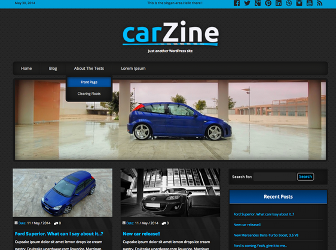
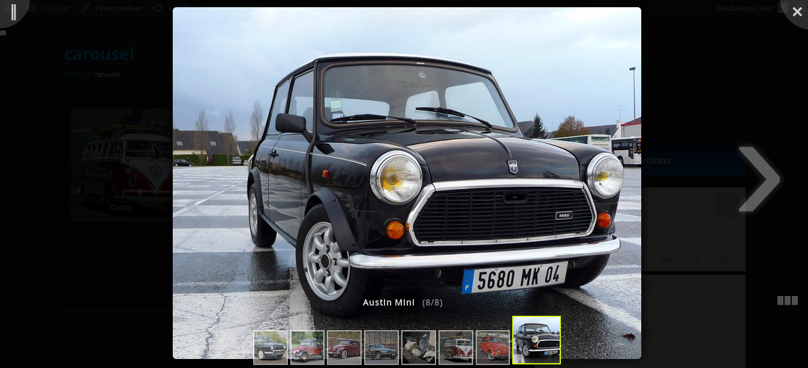

Présentation de mon projet
Le projet qui m'a été attribué au sort est le suivant :
Un collectionneur de voitures, loue ses véhicules de collection sur www.ouicar.fr.
Il souhaite mettre en place un blog permettant de présenter ses différents modèles et leurs réservations.
J'ai mis un certain temps à choisir mon thème. À mon sens, il est essentiel d'avoir un thème en accord avec la demande du client. Je me suis donc tourné naturellement vers des templates axés "voitures" pour enfin choisir carZine qui est dédié aux petites annonces de ventes de voitures en ligne... Le côté annonces de journal m'a semblé être une bonne solution pour ne pas repousser les personnes d'un cetrain âge. En effet les voitures de collection types "2cv" n'intéressent pas vraiment les plus jeunes; et en même temps si ces derniers étaient éventuelement interressés, le coté web plutôt que le papier serait plus atractif pour eux.
Contrainte, je devais réaliser un carrousel avec les photos des voitures de mon client. J'ai alors téléchargé deux pluggins => image carousel et => gallery lightbox. L'un couplé à l'autre nous donne un bon rendu : un carrousel dans une page, que l'on peut même mettre en plein écran et qui switch automatiquement les photos.

Je vais vous expliquer plus en détails comment on installe WP ainsi que des thèmes et des pluggins supplémentaires. Avec un peu de méthode il n'y a rien de sorcier... Suffit de bien suivre les étapes pas à pas et de ne rien négliger.